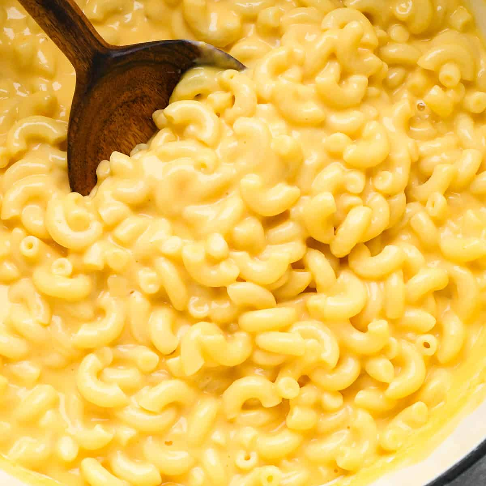

ode
Slow Cooker Mac and Cheese

What You'll Need
This crockpot mac and cheese is creamy, comforting, and takes just moments to assemble in a slow cooker. Great for large family gatherings and to take to potluck dinners. It's always a big hit! These are the ingredients you’ll need to make this m and cheese recipe in the slow cooker:
- Elbow macaroni noodles
- A stick of butter
- Salt and pepper
- Shredded cheddar cheese
- Whole and evaporated milk
- Two eggs
- One can of condensed cheddar cheese soup
- Paprika (optional)
Instructions
- Boil the pasta in salted water, then drain and transfer to the slow cooker.
- Stir in the butter, seasonings, and about half of the Cheddar.
- Whisk the evaporated milk and eggs together, then stir into the pasta.
- Whisk the milk and the soup together, then stir into the pasta.
- Sprinkle the remaining cheese over the pasta mixture and garnish with paprika.
- Cook on Low for 2 ½ to 3 hours.